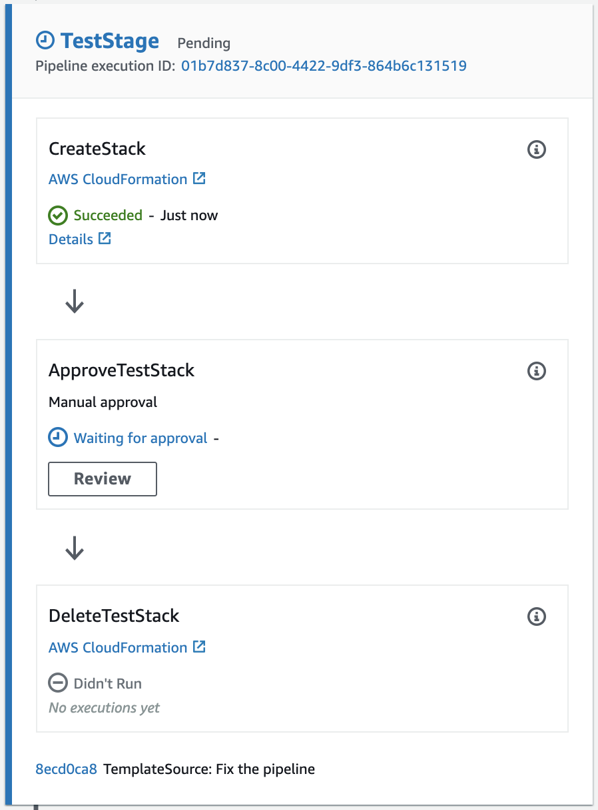

Testing a Template
The vpc ID default-vpc on wordpress/wordpress-single-instance.yaml line 145 does not exist. If we ommit the security group on a CloudFormation template it will default to the default VPC, so let’s do exactly that. Delete line 145 all together to get the following security group:
WebServerSecurityGroup:
Type: AWS::EC2::SecurityGroup
Properties:
GroupDescription: "Enable HTTP access via port 80 locked down to the load balancer + SSH access"
SecurityGroupIngress:
- CidrIp: 0.0.0.0/0
FromPort: 80
IpProtocol: tcp
ToPort: 80
And commit and push the changes:
git add wordpress/wordpress-single-instance.yaml
git commit -m "Removed default-vpc on the SG"
git push AWSCodeCommit master
TaskCat is a tool that tests AWS CloudFormation templates. It deploys your AWS CloudFormation template in multiple AWS Regions and generates a report with a pass/fail grade for each region. You can specify the regions and number of Availability Zones you want to include in the test, and pass in parameter values from your AWS CloudFormation template. taskcat is implemented as a Python class that you import, instantiate, and run.

Taskcat uses two configuration files: Global config and Project config. The global config file provides global settings that become defaults for all projects. It is located in user’s home-directory ~/.taskcat.yml. The project config file provides project-specific configurations. The project config file is located in the root of your project folder <PROJECT_ROOT>/.taskcat.yml
project:
name: wordpress-single-instance
regions:
- eu-west-1
tests:
default:
template: wordpress/wordpress-single-instance.yaml
TaskCat performs multiple actions, such as template validation, parameter validation, and staging content into an Amazon Simple Storage Service (Amazon S3) bucket, before launching the AWS CloudFormation stack. It launches the stack in the defined Regions, simultaneously. And it regularly polls the AWS CloudFormation stack status to check if the stack creation is finished. After the stack has been successfully created, TaskCat deletes it. How much time TaskCat takes to finish the testing depends on how many tests you have defined in your TaskCat configuration file and how long each stack creation and deletion takes. After the TaskCat run is completed, it generates a report in HTML format in the directory from where you are running the TaskCat command.
Parameter Overrides were added to the taskcat to solve a couple of common problems. First, many templates share common parameters that are unique to an AWS account, like a KeyPair name or an S3 Bucket, overrides provided a way to store those centrally for all your projects. Second, we didn’t want to add sensitive data (usernames, passwords, tokens) to a git repository. The idea was to store sensitive/unique data outside of a git repository, but still execute a test using this data. To that end, any parameter defined in the global config will take precedence over the same parameter in a project-level config.

The stack is now waiting for manual approval and an email on your inbox asking for it. However, we received another email from AWS Config. It says:
A Config rule is not compliant in your environment. Please open the Config Dashboard for further details.